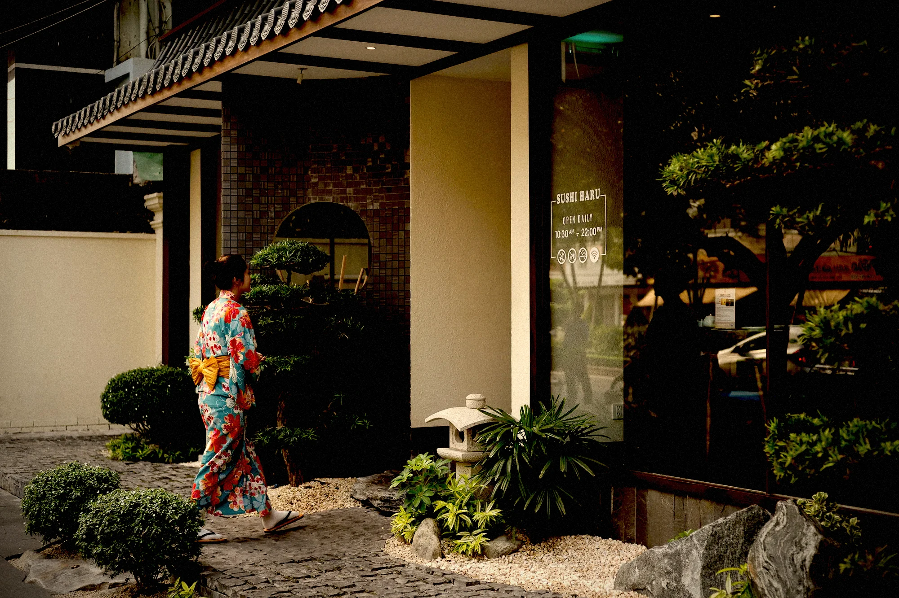
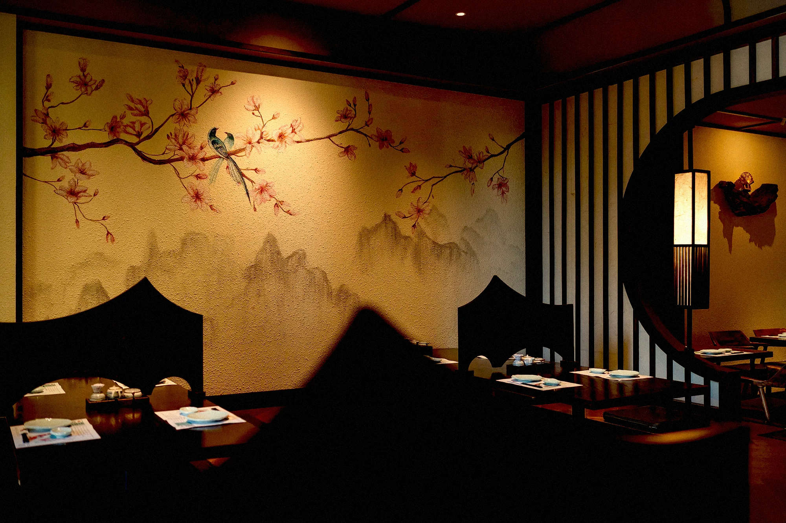
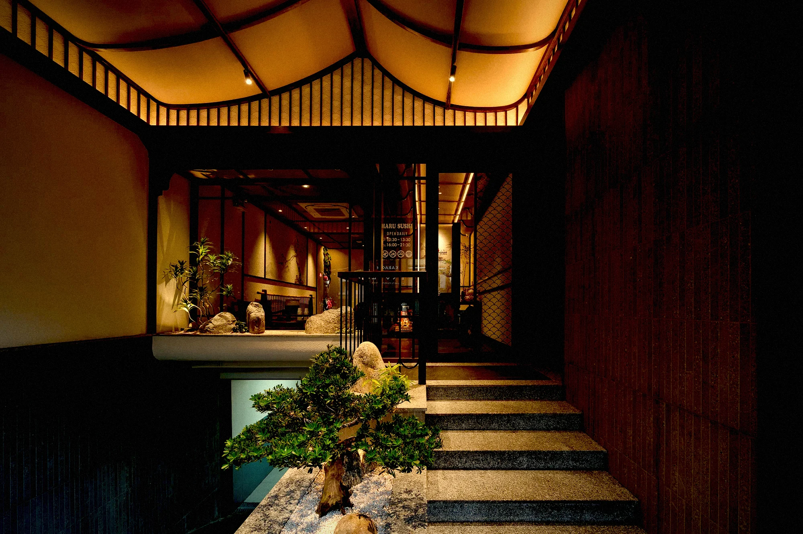
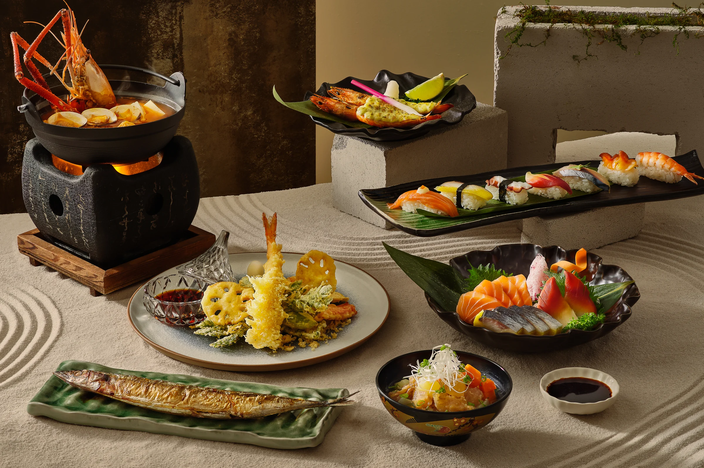
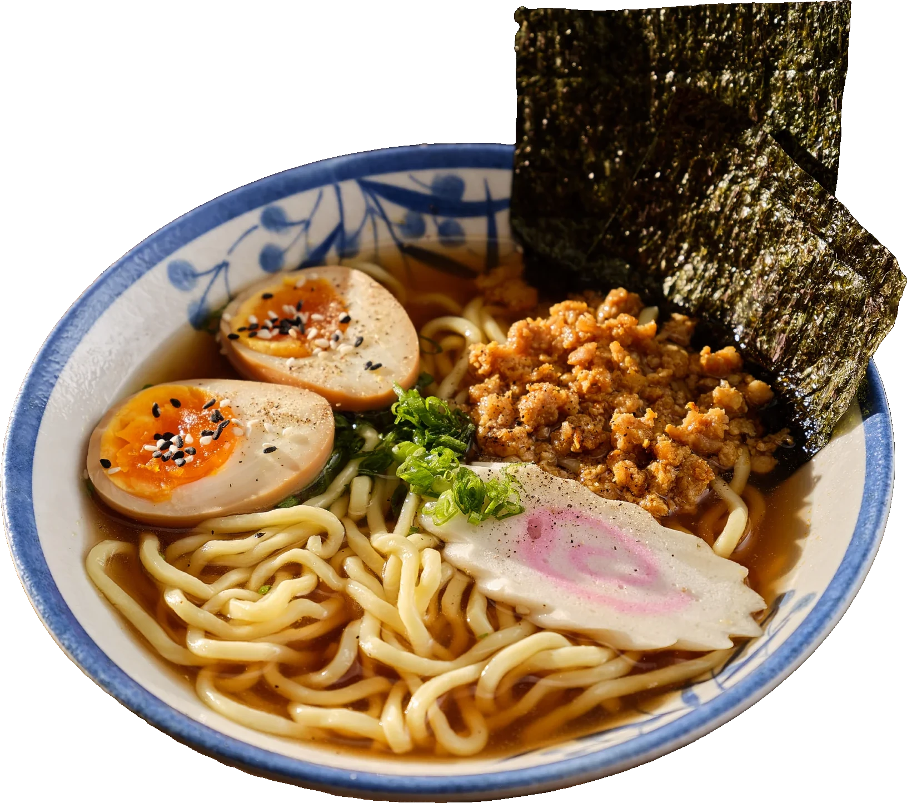
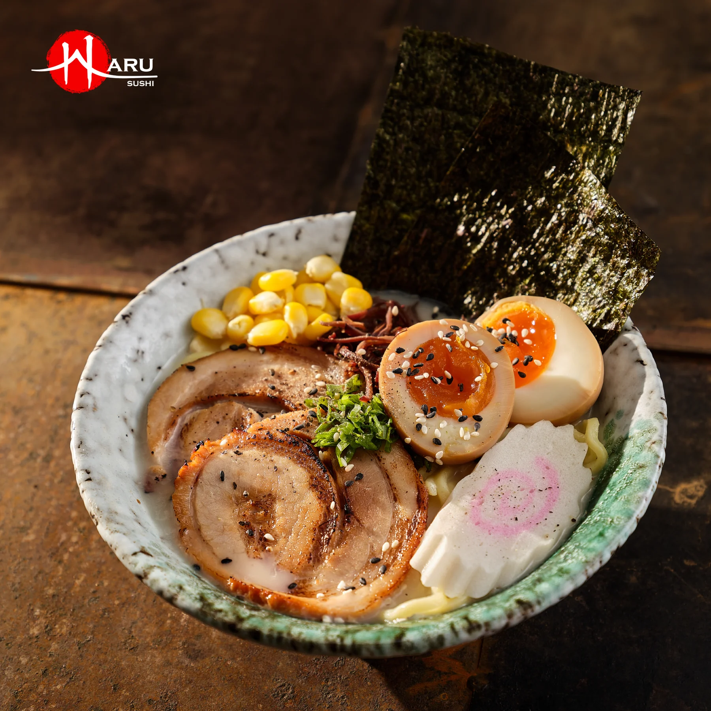

01
Đội ngũ nhân viên
Chu đáo trong từng chi tiết nhỏ — omotenashi đúng tinh thần hiếu khách Nhật. Từ lời chào ở cửa đến lát sashimi cuối cùng, mỗi khoảnh khắc đều được chăm chút.

Mùa xuân Nhật Bản nở rộ giữa lòng Sài Gòn
Trong tiếng Nhật, Haru nghĩa là Mùa Xuân — mùa của khởi đầu tươi mới, của trăm hoa đua nở, của nguồn thực phẩm dồi dào và tinh khôi nhất.
Haru Sushi ra đời để trở thành một “Mùa Xuân” trong lòng thực khách — nơi khởi đầu cho những cuộc gặp gỡ và trải nghiệm ẩm thực trọn vẹn.
Khám phá thực đơn →
Chu đáo trong từng chi tiết nhỏ — omotenashi đúng tinh thần hiếu khách Nhật. Từ lời chào ở cửa đến lát sashimi cuối cùng, mỗi khoảnh khắc đều được chăm chút.

Cửa nguyệt, sân thiền, hồ cá koi và những bức bích họa núi Phú Sĩ — kiến trúc Nhật Bản truyền thống, riêng tư và ấm cúng cho mọi buổi gặp gỡ.
Xem tiếp đến trang chi nhánhHải sản nhập mới mỗi ngày từ Việt Nam, Nhật Bản & Na Uy — tinh khiết, đúng mùa, trọn vị. Không giữ qua đêm, không đánh đổi độ tươi.


